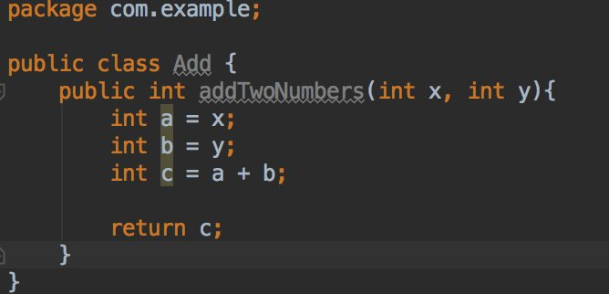
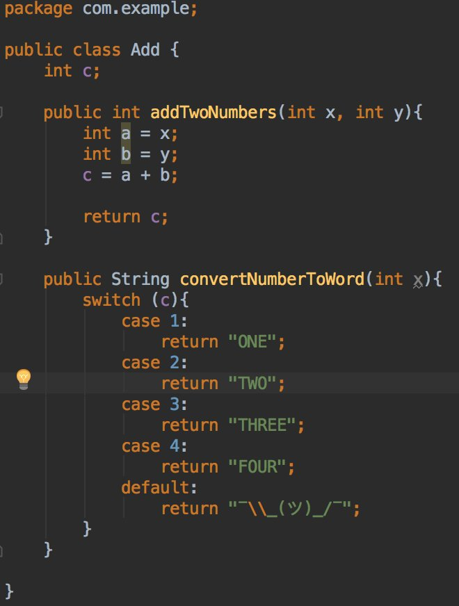
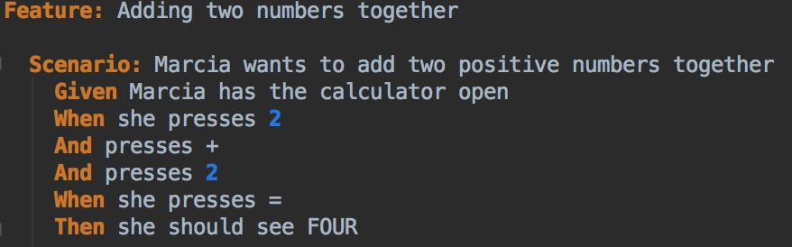
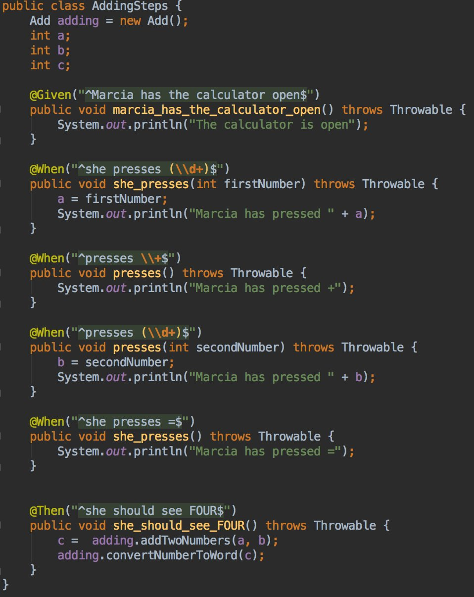
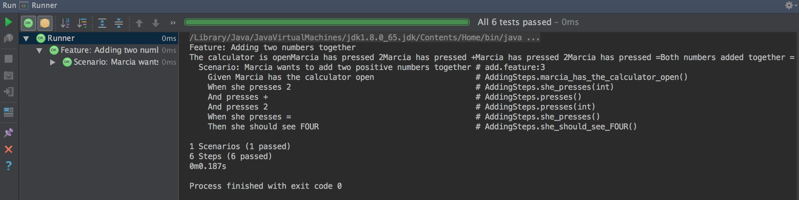

Keeping your codebase as cool as a Cucumber
Tanya Powell / @tanya_powell

- I'm a Software Engineer at Gamesys
- I volunteer at EmpowerHack
- I'm a Board Member for Women Hack For Non-Profits
- I volunteer at Chayn
- I'm one half of an amazing podcast called A Large G&T
What is Behaviour Driven Development (BDD)?
 (Photo Credit: It's a Delivery Thing)
(Photo Credit: It's a Delivery Thing)
U w0t Mate
- Imagine we are making a simple calculator that only adds two small numbers together
- We can assume that we display:
2 + 2 = 4 - Actually our domain expert expected our calculator to display:
2 + 2 = FOUR
| Our Assumption Implemented | The Expectation Implemented |

When we print out addTwoNumbers(2, 2) we will be returned 4
|

Our answer will now be returned as FOUR
|
BDD vs TDD
| Behaviour Driven Development (BDD) | Test Driven Development (TDD) |
| Bacon ipsum dolor amet picanha strip steak cow swine pork chop porchetta fatback. Spare ribs pork turkey andouille. Cupim pork loin meatball, shoulder beef pork chop brisket flank chuck. | Bacon ipsum dolor amet picanha strip steak cow swine pork chop porchetta fatback. Spare ribs pork turkey andouille. Cupim pork loin meatball, shoulder beef pork chop brisket flank chuck. |
Why use BDD?
- It's simple and can improve team communication
- The developer will know what to build
- The tester will know what to test
- The domain expert knows what bahaviour to expect
How to use BDD?
Can be used with:
| Ruby | Java | Python | Javascript |
| Clojure | .NET | PHP | C++ |
Gherkin

- Cucumber's Domain Specific Language that allows you to describe the expected behaviour
- It's two purposes are documentation and automated tests
Gherkin Keywords
| Feature | Background | Scenario | Given |
| When | Then | And | But |
| * | Scenario Outline | Examples |
Simple Feature Template (Feature Injection)
In order to { meet some goal }
As a { type of stakeholder }
I want { a feature }
Scenario: Adding Two Numbers
Writing The Tests
Results
